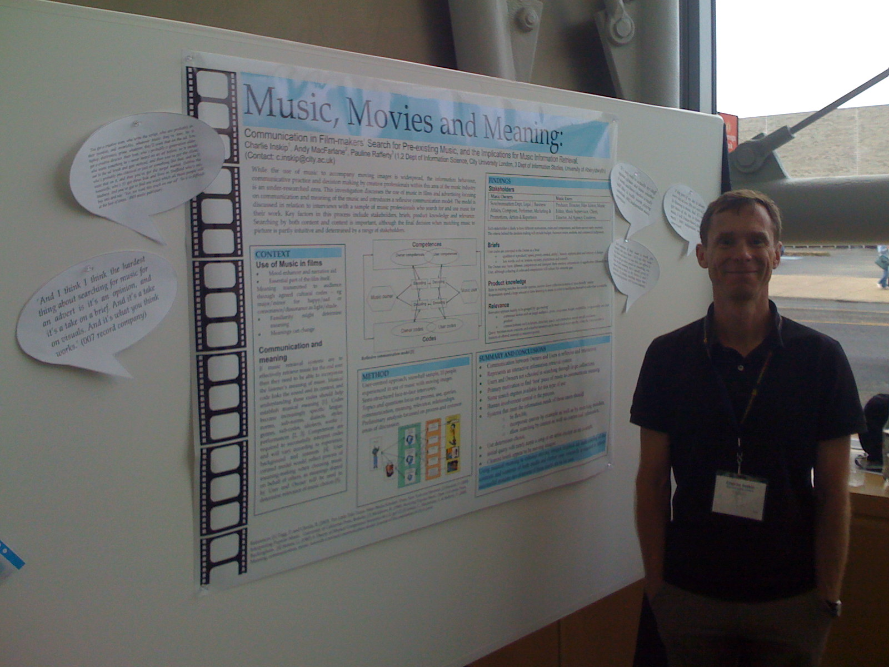
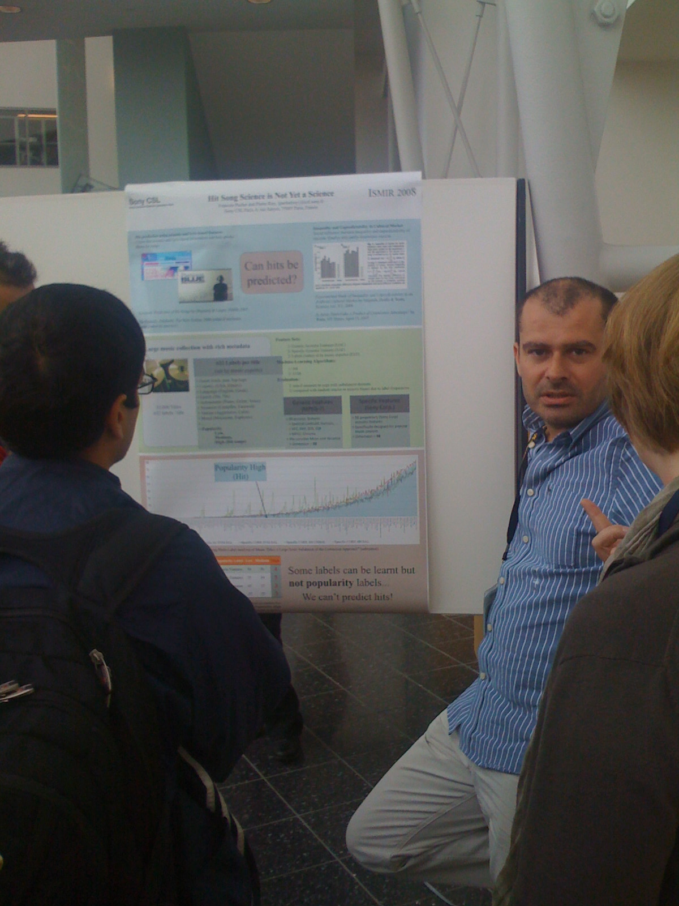
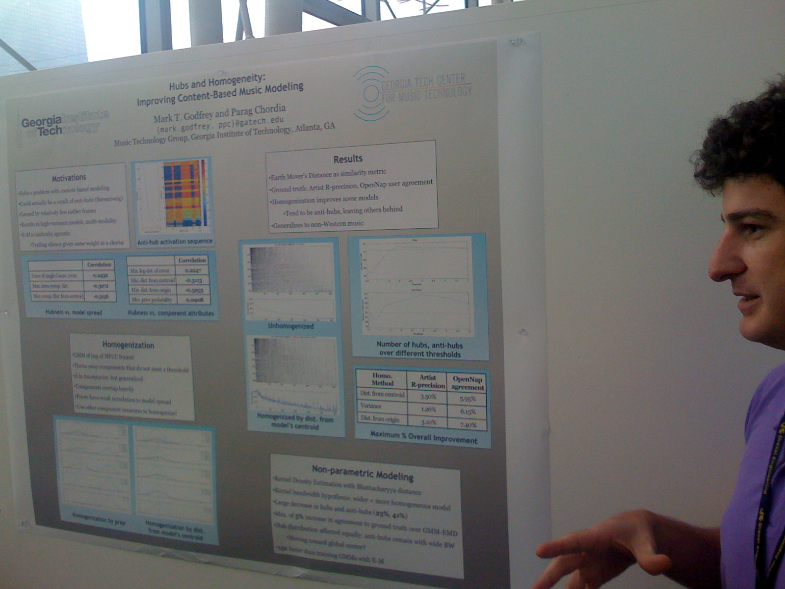
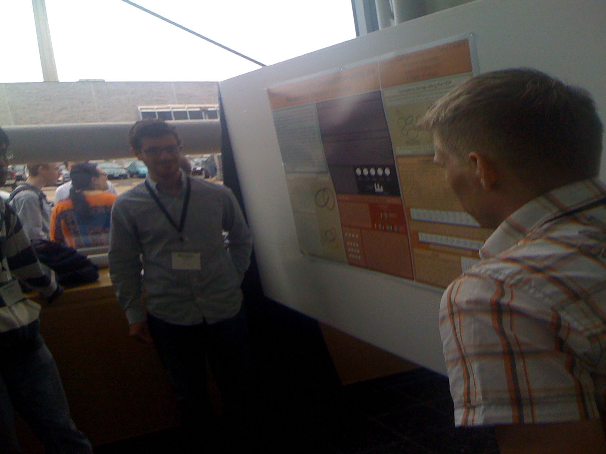
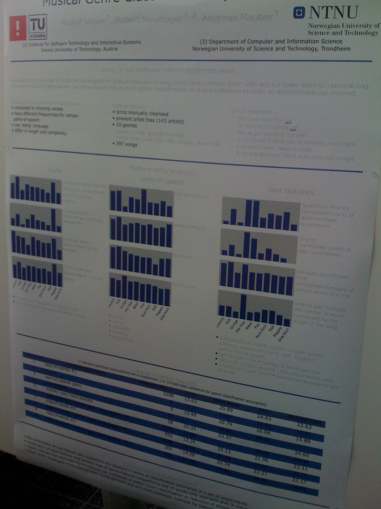
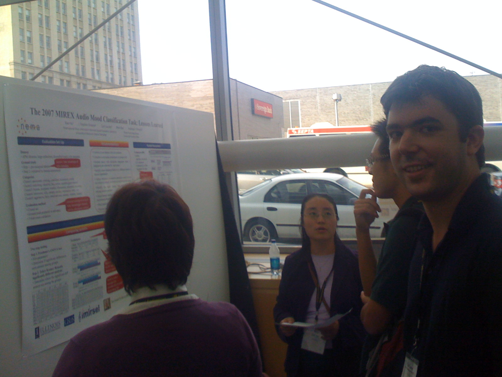

ISMIR Day 2 Posters
Music, Movies and Meaning: Communication in Film-Makers’ Search for Pre-Existing Music, and the Implications for Music Information Retrieval
Charlie Inskip, Andy Macfarlane and Pauline Rafferty Charlie brings lots of insight into the problems of finding music for film - the clash of cultures and the different (and sometimes non-overlapping) vocabularies get in the way. (Charlie is also a really interesting guy to talk to ... he really knows a lot about popular music)
Hit Song Science is Not Yet a Science
Francois Pachet and Pierre RoyPierre presenting his poster debunking Hit Song Science. (As Jim Waldo says ... anything with 'science' in its name probably isn't)

Hubs and Homogeneity: Improving Content-Based Music Modeling
Mark Godfrey and Parag Chordia Mark and Parag were describing some their work to avoid hubs that occur with some timbre-based similarity models.
Content-Based Musical Similarity Computation Using the Hierarchical Dirichlet Process
Matthew Hoffman, David Blei and Perry Cook Matthew showing his promising work that is faster and potentially and higher quality than classical approaches.
Rhyme and Style Features for Musical Genre Categorisation By Song Lyrics
Rudolf Mayer, Robert Neumayer and Andreas Rauber Some interesting and fun work looking at features in lyrics that can be used for music classification.
The 2007 MIREX Audio Mood Classification Task: Lessons Learned
Xiao Hu, J. Stephen Downie, Cyril Laurier, Mert Bay and Andreas F. Ehmann The MIREX team showing detailed results from the last year's Audio Mood classification task. It is really interesting to see the amount of improvement that occurred from 2006 to 2007. Apparently the same improvement occurred this year. Cyril is doing some really interesting things with mood. He showed me his mood music player that shows a real-time indicator of the mood of the currently playing song as well as a really nice music search engine being developed at BMAT that allows you to query for music based upon multiple moods and other aspects of the music.